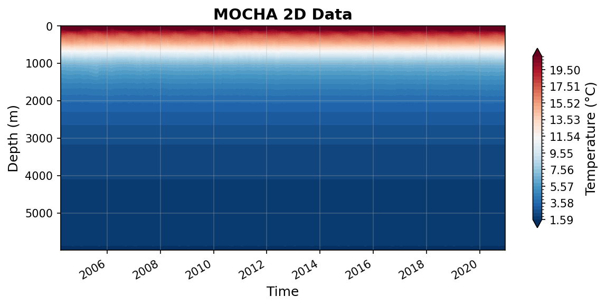

MOCHA Datasets
mocha_mht_data_ERA5_v2020.nc
Dataset Overview
Project: RAPID-MOCHA
Description: No description available
Source File: mocha_mht_data_ERA5_v2020.nc
Data Product: MOCHA heat transport at 26.5°N
License: ODC-By-1.0
Date Created: 2023-01-01T00:00:00Z
Time Coverage: 2004-04-02 to 2020-12-14
Record Length: 12,202 observations (16.7 years)
Sampling Frequency: 12H
Citation:
Johns, W. E., Elipot, S., Smeed, D. A., Moat, B., King, B., Volkov, D. L., Smith, R. H. 2023. Towards two decades of Atlantic Ocean mass and heat transport at 26.5° N. Phil. Trans. R. Soc. A 381: 20220188. https://doi.org/10.1098/rsta.2022.0188
Acknowledgement:
Data from the RAPID-MOCHA program are funded by the U.S. National Science Foundation and U.K. Natural Environment Research Council and are freely available at www.rapid.ac.uk/data/data-download and mocha.rsmas.miami.edu/mocha.
Dataset Visualization
{kind=link}

Time series plot for MOCHA dataset.
Dataset Statistics
Total Variables: 20
Total Coordinates: 2
Dataset Size: 115.63 MB
Coordinate Information
The following table shows information about the dataset coordinates in the standardised version, including coordinate name remapping from the original, if any:
Coordinate |
Description |
Units |
Size |
Min Value |
Max Value |
Missing % |
|---|---|---|---|---|---|---|
z → DEPTH |
Depth: Depth below surface of the water |
m |
(307,) |
0.00 |
5995.07 |
0.0% |
time → TIME |
Time: time array that corresponds to the profile variables |
seconds since 1970-01-01T00:00:00Z |
(12202,) |
2004-04-02 |
2020-12-14 |
0.0% |
Variable Information
The following table shows the mapping from original variable names to standardized names, along with key statistics for each variable.
Variable |
Description |
Units |
Size |
Min Value |
Max Value |
Missing % |
|---|---|---|---|---|---|---|
Q_sum → MHT |
northward ocean heat transport: Net meridional heat transport |
PW |
(12202,) |
-0.64 |
2.52 |
0.0% |
Q_ek → MHT_EKMAN |
northward ocean heat transport due to Ekman transport: Ekman heat transports |
W |
(12202,) |
-1164230805524764.75 |
1740501416424006.75 |
0.0% |
Q_fc → MHT_FC |
northward ocean heat transport due to Florida Current transport: Florida Straits heat transports |
W |
(12202,) |
1496015485426369.25 |
3286291331250119.50 |
0.0% |
Q_gyre → MHT_GYRE |
northward ocean heat transport due to gyre: Basinwide gyre heat transports, as classically defined (e.g. see Johns et al., 2011) |
PW |
(12202,) |
-0.03 |
0.23 |
0.0% |
Q_int → MHT_INT |
northward ocean heat transport due to interior transport: Heat transport for the rest of the interior to Africa (but only represents the contribution by the zonal mean v and T) |
W |
(12202,) |
-2969895885209712.00 |
-814597926350619.38 |
0.0% |
Q_mo → MHT_MO |
northward ocean heat transport due to mid-ocean transport: The sum of all the three interior components between the Bahamas and Africa (Q_int + Q_wedge + Q_eddy) |
W |
(12202,) |
-2523308464721369.00 |
-921832486087110.00 |
0.0% |
Q_ot → MHT_OT |
northward ocean heat transport due to overturning: Basinwide overturning heat transports, as classically defined (e.g. see Johns et al., 2011) |
PW |
(12202,) |
-0.63 |
2.47 |
0.0% |
Q_wedge → MHT_WEDGE |
northward ocean heat transport due to western boundary wedge transport: Heat transport for the “western boundary wedge” off Abaco |
W |
(12202,) |
-413997795827425.31 |
715477685042347.00 |
0.0% |
maxmoc → MOC |
MOC_Z: time-varying maximum value of MOC streamfunction |
sverdrup |
(12202,) |
-5.07 |
32.90 |
0.0% |
moc → PSI_Z |
Streamfunction: Streamfunction across the Atlantic at 26.5°N |
sverdrup |
(12202, 307) |
-18.92 |
37.79 |
0.0% |
Q_eddy |
MHT_EDDY: interior gyre component due to spatially correlated v’T’ variability across the interior, derived from an objective analysis of interior ARGO T/S data merged with the mooring T/S data from moorings, and smoothly merged into the EN4 climatology along 26.5°N below 2000m |
W |
(12202,) |
-31795267564798.27 |
132280944423897.55 |
0.0% |
T_basin → TEMP_BASIN |
Temperature: time-varying basinwide mean potential temperature profile |
degree_C |
(12202, 307) |
1.50 |
28.55 |
0.0% |
T_basin_mean → TEMP_BASIN_MEAN |
Mean Temperature: time-mean basinwide mean potential temperature profile |
degree_C |
(307,) |
1.51 |
24.98 |
0.0% |
T_fc_fwt → TEMP_FC_FWT |
FC Temperature: time-varying Florida Current flow-weighted potential temperature |
degree_C |
(12202,) |
18.57 |
20.76 |
0.0% |
V_basin → TRANSPROF_BASIN |
Transport per unit depth: time-varying basinwide mean transport profile |
sverdrup/m |
(12202, 307) |
-0.39 |
0.56 |
0.0% |
V_basin_mean → TRANSPROF_BASIN_MEAN |
Mean Transport per unit depth: time-mean basinwide mean transport profile |
sverdrup/m |
(307,) |
-0.01 |
0.10 |
0.0% |
V_fc → TRANSPROF_FC |
FC Transport per unit depth: time-varying Florida Current transport profile |
sverdrup/m |
(12202, 307) |
-0.00 |
0.15 |
0.0% |
V_fc_mean → TRANSPROF_FC_MEAN |
Mean FC Transport per unit depth: time-mean Florida Current transport profile |
sverdrup/m |
(307,) |
-0.00 |
0.11 |
0.0% |
trans_ek → TRANS_EKMAN |
Ekman: time-varying Ekman transport (calculated from ERA-I winds) |
sverdrup |
(12202,) |
-12.92 |
18.16 |
0.0% |
trans_fc → TRANS_FC |
FC: time-varying Florida Current transport (from the cable) |
sverdrup |
(12202,) |
19.17 |
39.53 |
0.0% |
Metadata (edits applied noted)
The following metadata describes this dataset:
Title*: Atlantic Meridional Overturning Circulation (AMOC) Heat Transport Time Series between April 2004 and December 2020 at 26.5°N
Summary: Total heat transport results for the first 16.8 years of the RAPID/MOCHA program, from April 2004 through December 2020.
Program*: RAPID
Project*: RAPID-MOCHA
License*: ODC-By-1.0
Acknowledgment: Data from the RAPID-MOCHA program are funded by the U.S. National Science Foundation and U.K. Natural Environment Research Council and are freely available at www.rapid.ac.uk/data/data-download and mocha.rsmas.miami.edu/mocha.
Weblink*: http://mocha.rsmas.miami.edu/mocha
Platform: mooring
Platform Vocabulary: https://vocab.nerc.ac.uk/collection/L06/
Data Product*: MOCHA heat transport at 26.5°N
Time Coverage Start*: 2004-04-02
Time Coverage End*: 2020-12-14
Contributor Name*: William E. Johns, William E. Johns, Shane Elipot, David A. Smeed, Ben I. Moat, Brian King, Denis Volkov, Ryan H. Smith
Contributor Role*: originator, principalInvestigator, coAuthor, coAuthor, coAuthor, coAuthor, coAuthor, coAuthor
Contributor Role Vocabulary*: https://vocab.nerc.ac.uk/collection/G04/current/
Contributor Email: bjohns@rsmas.miami.edu, bjohns@rsmas.miami.edu, , , , , ,
Contributor Id*: https://orcid.org/0000-0002-1093-7871, https://orcid.org/0000-0002-1093-7871, https://orcid.org/0000-0001-6051-5426, https://orcid.org/0000-0003-1740-1778, https://orcid.org/0000-0001-8676-7779, https://orcid.org/0000-0003-1338-3234, https://orcid.org/0000-0002-9290-0502, https://orcid.org/0000-0001-9824-6989
Contributing Institutions: Rosenstiel School of Marine and Atmospheric Science (University of Miami), National Oceanography Centre (Southampton), NOAA AOML
Contributing Institutions Vocabulary: https://edmo.seadatanet.org/report/1382, https://edmo.seadatanet.org/report/17,
Contributing Institutions Role: , ,
Conventions: CF-1.8, ACDD-1.3, OceanSITES-1.5
featureType*: timeSeriesProfile
featureType_vocabulary: https://cfconventions.org/cf-conventions/v1.6.0/cf-conventions.html#_features_and_feature_types
Source File*: mocha_mht_data_ERA5_v2020.nc
Source Path*: ~/.amocatlas_data/mocha_mht_data_ERA5_v2020.nc
Date Created*: 2023-01-01T00:00:00Z
Date Modified: 2026-08-01T00:00:00Z
Processing Software: http://github.com/AMOCcommunity/amocatlas
Processing Version: v0.4.0
Processing Datasource*: mocha26n
Applied Variable Mapping: [Complex metadata structure - 24 items]
Convert To Coord*: z
Methodology Reference: W.E. Johns, S. Elipot, D.A. Smeed, B. Moat, B. King, D.L. Volkov, R.H. Smith, “Towards Two Decades of Atlantic Ocean Mass and Heat Transports at 26.5ºN”, accepted for publication in Royal Society Philosophical Transactions A, 2023.
Methodology Doi: doi: 10.1098/rsta.2022.0188